TipoSP
TipoSP nasce de um desafio proposto em transformar um recorte da cidade de São Paulo em design digital. A partir desse desafio, o projeto se debruça sobre as tipografias paulistanas como recorte temático, entendendo que a própria cidade é, em sua essência, um sistema visual diverso e vivo. Por meio de pesquisa de campo, construímos uma curadoria tipográfica organizada em três eixos complementares, Identidade, Sinalização e Histórico, cada um com seu próprio sistema.
DisciplinaProjeto Digital
EquipeLaura Alcantara, Naian Menginelli
Ano2026-1
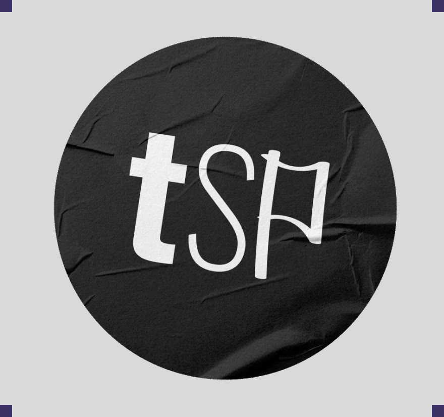
teste os adesivos!
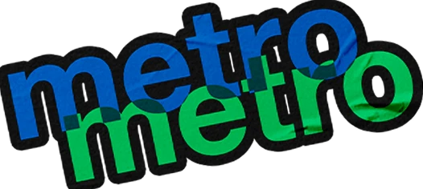
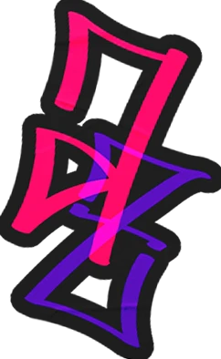
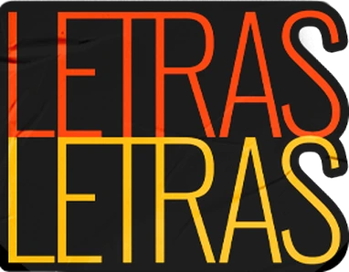
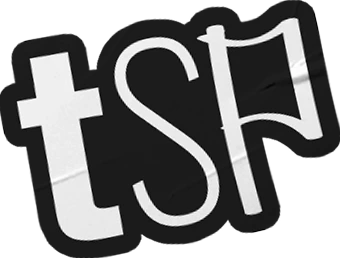
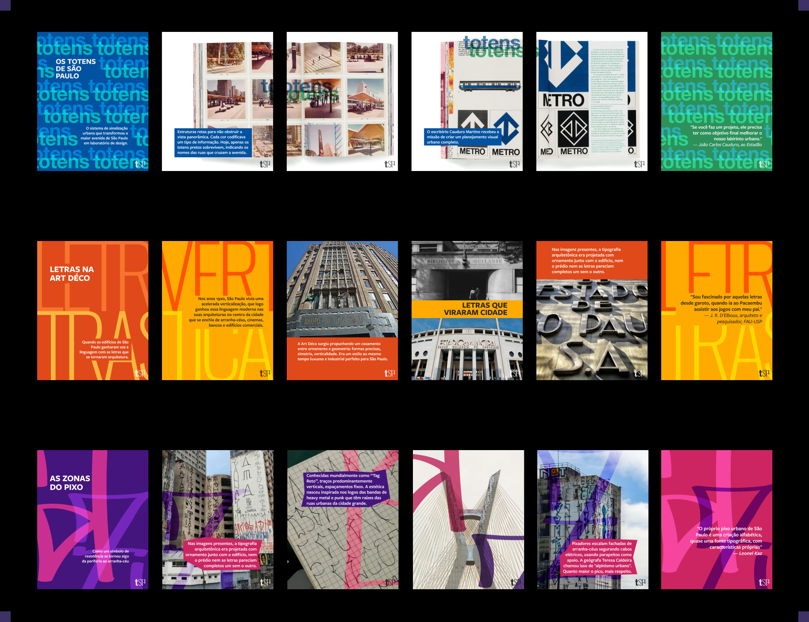
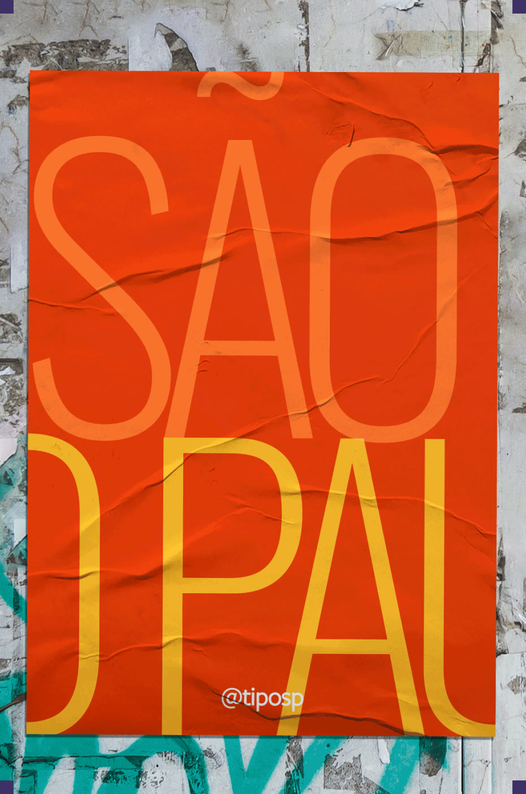
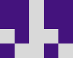
o resultado é um
sistema que traduz
a trajetória da
tipografia da
cidade, desde seus
primeiros vestígios
até a atualidade.
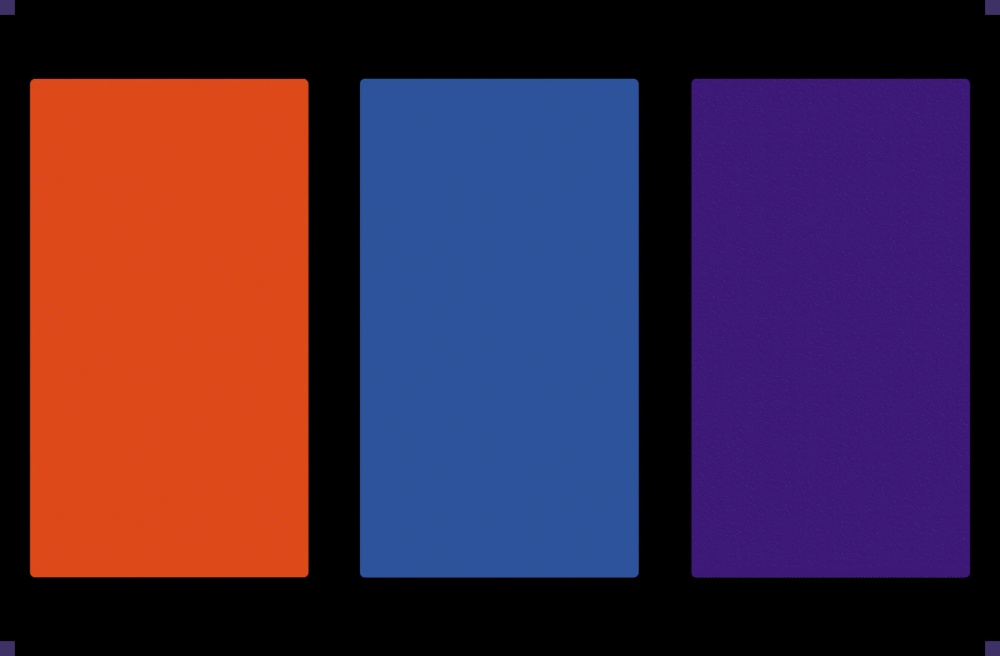
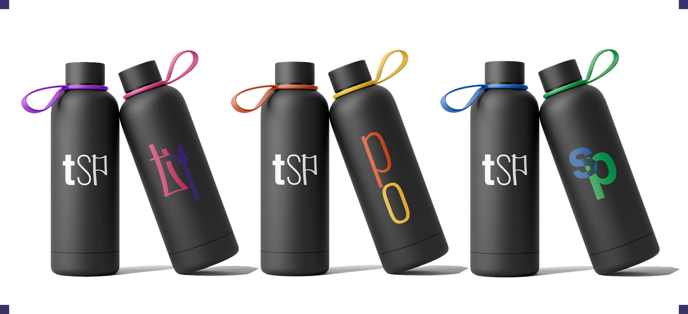
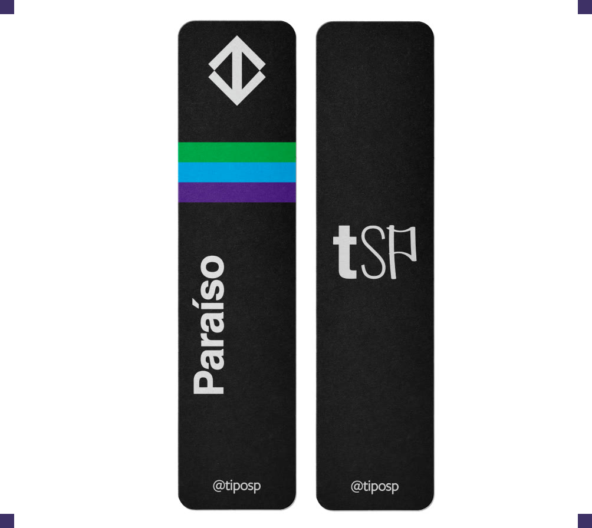
site interativo com um monitor